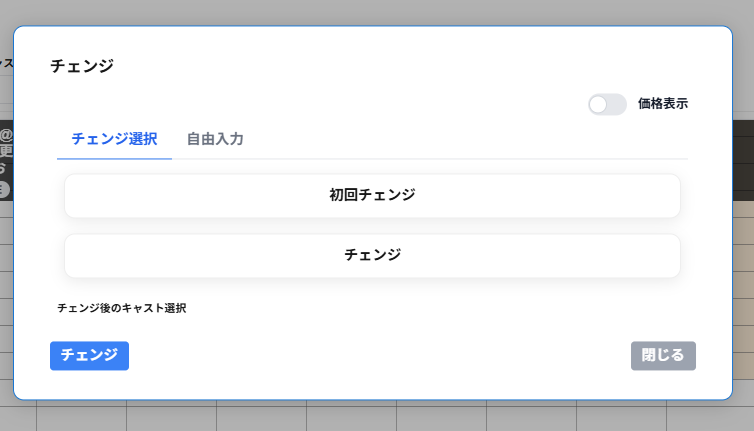

チェンジ画面上部にチェンジ選択タブと自由入力タブの切り替えが表示されます。
チェンジ選択のタブにはデータ管理で登録したチェンジが一覧で表示されます。
適用させるチェンジと、チェンジをして新たに接客をするキャストを選択します。
価格表示を選択すると一覧のチェンジの請求金額・チェンジ前キャスト支払・チェンジ後キャスト支払・追加時間(分)が表示されます。
自由入力のタブには、請求金額・チェンジ前キャスト支払・チェンジ後キャスト支払・追加時間(分)を入力します。
チェンジ後キャストは待機中のキャストのみが一覧で表示されます。チェンジ後キャストを一覧から選択します。
画面左下のチェンジをクリックするとチェンジが完了します。
